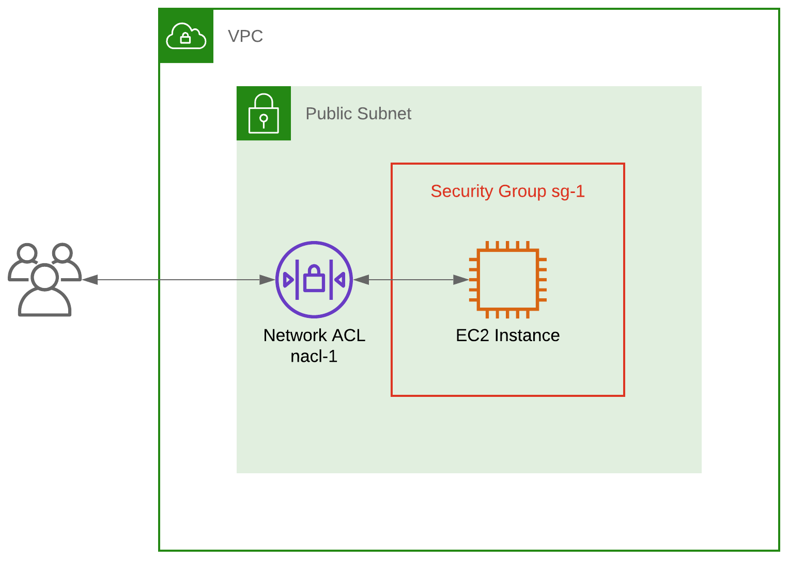
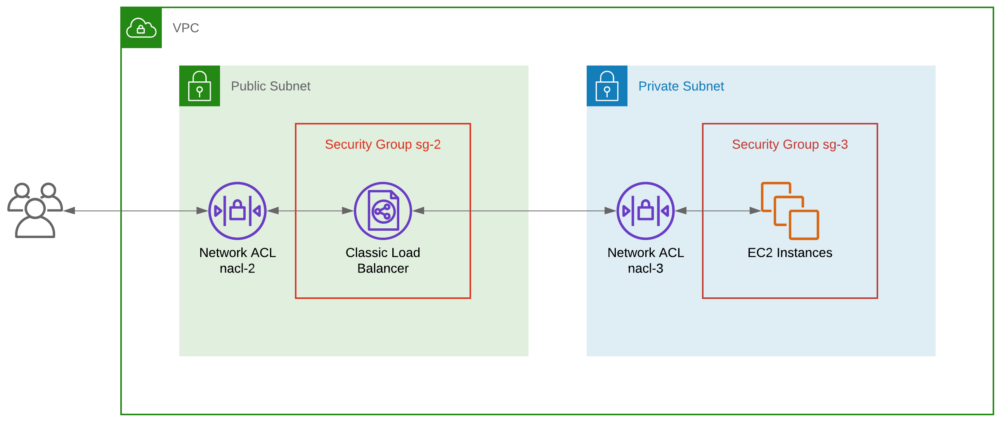

How to handle ephemeral ports in Security Groups and Network ACLs
Date Created: May 23, 2025
Date Modified:

Introduction
Confused about ephemeral ports?
Getting a response from an HTTP request to the first-ever EC2 instance you provision is a Hello World moment, that many AWS users will have experienced.
But when your EC2 instance is associated with a Security Group and Network Access Control List that only allow port 80 traffic, you'll find there's a problem; the responses to your requests won't make it out.
So if you've ever wondered “Why is my EC2 instance not responding to requests??” and fixed it by simply allowing All Traffic, keep reading.
At this point, it's worth taking a look at the primary security components within any VPC - Security Groups and Network Access Control Lists.
Security Groups
Security Groups act as virtual firewalls around resources within your VPC. You can use them to allow (but not deny) inbound and outbound traffic based on port number and a CIDR, IP address or security group.
They are stateful meaning allowed inbound traffic is permitted back out without an outbound rule, and allowed outbound traffic is permitted back in without an inbound rule.
Network Access Control Lists (NACLs)
Network Access Control Lists (or just Network ACLs, or NACLs) provide a similar layer of security although they act at the subnet level. They support allow and deny rules, and are stateless.
This means allowed inbound traffic may only return outbound if an outbound rule exists, and allowed outbound traffic may only return inbound if an inbound rule exists.
Network ACL rules are evaluated in order of their rule number from the lowest to the highest. The first rule to match is applied (e.g. to allow) regardless of any other later rules that contradict it (e.g. to deny).
EC2 instances and Ephemeral Ports
So why can't my EC2 instance respond to HTTP requests? There are many and varied answers to this question. But in the context of this post, it could be due to ephemeral ports.
Wikipedia describes ephemeral ports as being “allocated automatically from a predefined range…” and used as “…the port assignment for the client end of a client-server communication to a particular port (usually a well-known port) on a server.”
In other words, when a client initiates a request to a server on a well-known server port (e.g. port 80 for HTTP), the client port is chosen by the client from the ephemeral port range of the server. On AWS, the ephemeral port range for EC2 instances and Elastic Load Balancers is 1024-65535.
Consider the architecture in diagram A - an EC2 instance associated with a Security Group (sg-1) and located in a public subnet which is associated with a single Network ACL (nacl-1).
If you initiate an HTTP request to this EC2 instance on port 80, your request will originate from an ephemeral port on your side between 1024 and 65535.
To let your request through to the EC2 instance, Security Group sg-1 must have an inbound rule allowing requests on port 80. The return path for the response back to you on your ephemeral port is automatically allowed by the Security Group.
Security Group sg-1 - Inbound Rules
| Type | Protocol | Port Range | Source | Description |
|---|---|---|---|---|
| HTTP | TCP | 80 | 0.0.0.0/0 | Allow inbound traffic on port 80 from any IP address |
Security Group sg-1 - Outbound Rules
| Type | Protocol | Port Range | Destination | Description |
|---|---|---|---|---|
| No explicit outbound rules required | ||||
nacl-1 must also have an inbound rule allowing requests on port 80. However, due to the stateless nature of Network ACLs, it must also have an explicit rule for the response back to you on your ephemeral port between 1024 and 65535.
Network ACL nacl-1 - Inbound Rules
| Rule | Type | Protocol | Port Range | Source | Allow / Deny | Description |
|---|---|---|---|---|---|---|
| 100 | HTTP (80) | TCP (6) | 80 | 0.0.0.0/0 | ALLOW | Allow inbound traffic on port 80 from any IP address |
| * | ALL Traffic | ALL | ALL | 0.0.0.0/0 | DENY |
Network ACL nacl-1 - Outbound Rules
| Rule | Type | Protocol | Port Range | Destination | Allow / Deny | Description |
|---|---|---|---|---|---|---|
| 100 | Custom TCP Rule | TCP (6) | 1024-65535 | 0.0.0.0/0 | ALLOW | Allow outbound traffic to any IP address; this establishes the return path for the response to a request from the outside world (client; ephemeral port) to the EC2 instance (server; port 80) |
| * | ALL Traffic | ALL | ALL | 0.0.0.0/0 | DENY |
Load Balancers and Ephemeral Ports
The scenario above illustrates a point but a more realistic example would be to have an Elastic Load Balancer distributing requests between a number of EC2 instances in an Auto Scaling Group spanning multiple AZs.
Unless you've already gone serverless, this approach is the epitome of scalable, fault tolerant design since it allows you to scale out when needed by adding EC2 instances, and to sidestep faulty EC2 instances that have failed their health check.
Consider the architecture in diagram B - a Classic Load Balancer (to keep things simple) listening for HTTP traffic on port 80 and distributing requests to a group of EC2 instances; we'll say the health checks are on port 80 too.
If you initiate an HTTP request to the load balancer on port 80, your request will originate from an ephemeral port on your side between 1024 and 65535.
The load balancer, now acting as an effective client using its own ephemeral port between 1024 and 65535, will relay your request to port 80 on one of the EC2 instances.
The EC2 will respond to the load balancer on its ephemeral port, and the load balancer will then relay that response to you on your ephemeral port.
So… how do we configure the Security Groups? To let your request through to the load balancer and then through to one of the EC2 instances, sg-2 must have an inbound rule and an outbound allowing requests on port 80.
Likewise, sg-3 must have an inbound rule allowing requests on port 80 from the load balancer. The best practice way to do this is by referencing the load balancer Security Group itself within sg-3.
The return path for the response from an EC2 instance to the load balancer and then to you are automatically allowed by the Security Groups.
Security Group sg-2 - Inbound Rules
| Type | Protocol | Port Range | Source | Description |
|---|---|---|---|---|
| HTTP | TCP | 80 | 0.0.0.0/0 | Allow inbound traffic on port 80 from any IP address; return path is automatically allowed |
Security Group sg-2 - Outbound Rules
| Type | Protocol | Port Range | Destination | Description |
|---|---|---|---|---|
| HTTP | TCP | 80 | [Private subnet CIDR] | Allow outbound traffic to the EC2 instances on their port 80; return path is automatically allowed |
Security Group sg-3 - Inbound Rules
| Type | Protocol | Port Range | Source | Description |
|---|---|---|---|---|
| HTTP | TCP | 80 | sg-2 | Allow inbound traffic on port 80 from the load balancer; return path is automatically allowed |
Security Group sg-3 - Outbound Rules
| Type | Protocol | Port Range | Destination | Description |
|---|---|---|---|---|
| No explicit outbound rules required | ||||
How about the Network ACLs? In short, the config is similar to the Security Groups for sg-2 and sg-3 but with additional rules for the return paths as shown below.
Network ACL nacl-2 - Inbound Rules
| Rule | Type | Protocol | Port Range | Source | Allow / Deny | Comments |
|---|---|---|---|---|---|---|
| 100 | HTTP (80) | TCP (6) | 80 | 0.0.0.0/0 | ALLOW | Allow inbound traffic on port 80 from any client IP address |
| 200 | Custom TCP Rule | TCP (6) | 1024-65535 | [Private subnet CIDR] | ALLOW | Allow inbound traffic from the EC2 instances; this establishes the return path for the response to a request from the load balancer (client; ephemeral port) to the EC2 instances (server; port 80) |
| * | ALL Traffic | ALL | ALL | 0.0.0.0/0 | DENY |
Network ACL nacl-2 - Outbound Rules
| Rule | Type | Protocol | Port Range | Destination | Allow / Deny | Comments |
|---|---|---|---|---|---|---|
| 100 | HTTP (80) | TCP (6) | 80 | [Private subnet CIDR] | ALLOW | Allow outbound traffic to the EC2 instances on their port 80 |
| 200 | Custom TCP Rule | TCP (6) | 1024-65535 | 0.0.0.0/0 | ALLOW | Allow outbound traffic to any IP address; this establishes the return path for the response to a request from the outside world (client; ephemeral port) to the load balancer (server; port 80) |
| * | ALL Traffic | ALL | ALL | 0.0.0.0/0 | DENY |
Network ACL nacl-3 - Inbound Rules
| Rule | Type | Protocol | Port Range | Source | Allow / Deny | Comments |
|---|---|---|---|---|---|---|
| 100 | HTTP (80) | TCP (6) | 80 | [Public subnet CIDR] | ALLOW | Allow inbound traffic on port 80 from the load balancer |
| * | ALL Traffic | ALL | ALL | 0.0.0.0/0 | DENY |
Network ACL nacl-3 - Outbound Rules
| Rule | Type | Protocol | Port Range | Destination | Allow / Deny | Comments |
|---|---|---|---|---|---|---|
| 100 | Custom TCP Rule | TCP (6) | 1024-65535 | [Public subnet CIDR] | ALLOW | Allow outbound traffic to the load balancer; this establishes the return path for the response to a request from the load balancer (client; ephemeral port) to the EC2 instances (server; port 80) |
| * | ALL Traffic | ALL | ALL | 0.0.0.0/0 | DENY |
Conclusion
Even though this is examples, it is always advised to use the least privilege principle when configuring Security Groups and Network ACLs. This means only allowing the traffic you need and denying everything else.
You can check this AWS documentation for more information on Security Groups and Network ACLs.
Here are four things to keep in mind:
- Avoid allowing ALL Traffic; define your traffic paths and build least privilege rules accordingly
- Consider ports; only HTTP was mentioned here but you may need to incorporate other ports like HTTPS (443), SSH (22) and RDP (3389) in addition to ephemeral ports
- Consider sources and destinations; do you need to allow 0.0.0.0/0 (the CIDR for all IP addresses) or can you restrict access to one or more trusted subnet CIDRs?
- Use Network ACLs in conjunction with Security Groups so your network has two lines of defence